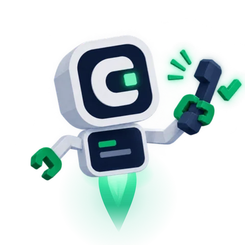
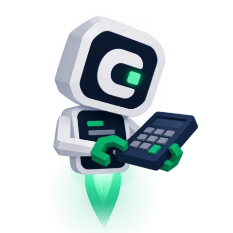
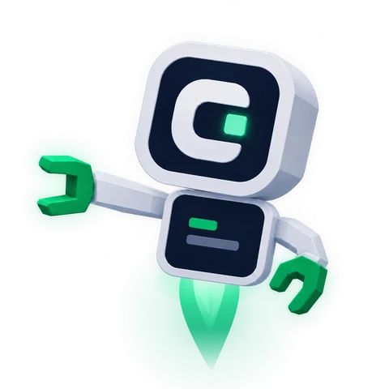
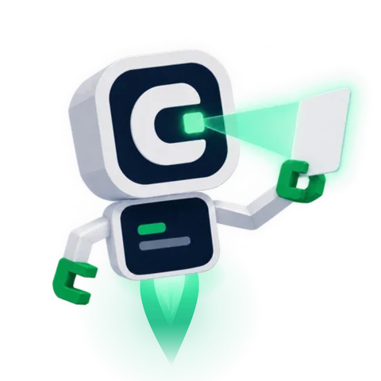
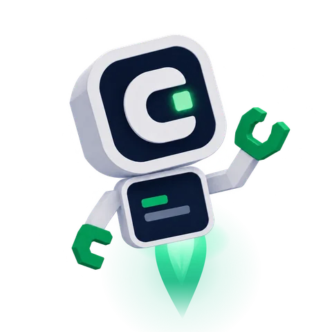
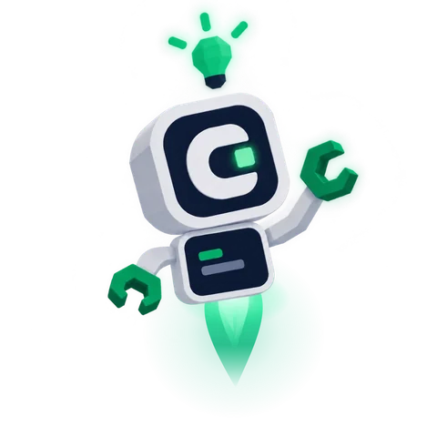

Business problems?I have the fix.
I spent hundreds of hours learning to fix business problems with AI so you don't have to. Tell me what still happens by hand in your business, and I'll show you what to fix first. Free.
Two a week. Ten minutes of my time, recorded, yours to keep. No pitch on the call.

Tick what still happens by hand.
Every one of these is something I've already built a fix for. Pick yours and I'll start there.

How the free check works.
You get the fix before you decide anything. If it's worth building, we talk about that after.
Apply
Fourteen quick questions about your business and where the time goes. Or just tell me what you want built.
2 minutesI record a check
Your website, your Google listing, and how you run things. I find the leak costing you the most and say exactly what I'd fix first.
10 minutes, on videoYou get the fix
The recording is yours whether we ever work together or not. If you want it built, the price is fixed and measured. No results, no fee.
Within 7 days
Once the leak is found, here is what I build.
Every job is quoted from the free check, at a fixed price, with a number we agree on up front. If the number can't be shown 30 days after delivery, you get your fees back (conditions).
Fix
Stop the leak that's costing you leads this week.
- Quick InstallOne kit, installed and tracked. Quote form, missed-call text-back, or the review system.
- Leak FixAll three kits plus the path from visitor to phone call, fixed end to end.
- Local EngineGoogle listing, reviews, service pages, and a monthly check on where Google and AI search name you.
Build
Websites, landing pages, and the tools that run your week.
- Landing PageOne page for one service, built to turn a visitor into a call. Same build as this site.
- Website RebuildFive to eight pages, fast on a phone, tracking live from day one. Rental operators can add direct booking.
- Automation SprintOne workflow off your plate in a week: quotes, reminders, invoices, the FAQ replies.
- Owner Report and Booking SyncFor rental and property operators: bookings pulled into one sheet every day, double bookings flagged, and a monthly owner report.
- Custom BuildAn internal app or a multi-step automation, scoped and fixed-priced.
Market
More of the right people reaching the thing we fixed.
- Marketing AuditThe written version of the free check, with a fix list ranked by return. Credited to your first project.
- AI Search VisibilityA fixed set of the questions your customers ask ChatGPT and Google, checked every month, with the pages fixed when you're missing.
Run
Keep it working after I leave.
- Front Desk TrainingTwo hours with you or your office manager on your own accounts, plus one workflow installed and running. Cheat sheet included.
- Site CareHosting, updates, and a couple of hours of edits a month.
- Ops RetainerThe automations keep running, one improvement a month, a one-page report.
Fixed price, one number, 30 days. Every job is scoped from the free check and measured from day one. I don't run ad budgets and I don't promise rankings or lead counts.
Start with the free check
Take the free stuff.
The checklist takes 10 minutes on your phone. The kits are the same files I install for paying clients.
The Lead Leak Checklist
Fifteen yes-or-no questions that find where your website and Google listing lose customers. Count your no's.
- Does your form ask for a phone number?
- Does a missed call get a text back within five minutes?
- Is there a way to ask for a review after every job?
The quote form
Captures a lead you can actually call back. Phone required, no captcha, tracks itself.
Missed-call text-back
A text goes out the moment a call is missed, so the customer doesn't dial the next company.
The review request system
Asks every customer the day after the job, inside Google's 2026 rules. Reply templates included.

Watch the fixes happen.
One real business problem a week, fixed on camera, with the exact prompt I used. Take it.
The form you cannot call back.
Most local business websites have a contact form that only collects a name and an email. Here is what that costs, and the fix I built in an afternoon.
Subscribe on YouTube
Questions owners ask first.
Short answers. The long ones are in the free check.
What does the free Optimization Check actually cost?
Nothing, and there is no pitch on the recording. I pick two applications a week, spend ten minutes on your website, your Google listing, and how you run things, and record exactly what I would fix first. The recording is yours whether we ever work together or not.
Do you need my passwords?
Never. If we do paid work, you add me as a user on your own accounts with the lowest access that does the job, and you remove me when it is done. Your accounts stay yours.
What does “measured or free” mean?
Every fix ships with tracking, and we agree on one number up front: quote requests a week, calls answered, reviews a month. Half is paid after the baseline is recorded, half on delivery. If the number cannot be shown 30 days after delivery, you get a full refund of my fees within 15 days. It does not promise the number goes up, and it does not apply if the tracking is removed. Full conditions.
How long does a fix take?
A single kit install is about a week. A full Leak Fix, all three kits plus the path from visitor to phone call, is about two. Bigger builds get a fixed timeline in the quote before anything starts.
Will this get me to the top of Google?
I do not promise rankings or lead counts, because nobody can honestly make those promises. I promise the fix, the tracking, and an honest number at 30 days.
You are a student. Why should I trust you with my business?
Because nothing here rests on trust. You get the free check first and decide after. Every claim on this site is backed by something I built, and where I do not have a number yet, the site says so. If I get something wrong, I say so on camera.
Any problems? I have the fix.
Two free checks a week. Apply now and you'll hear from me either way within seven days.
Get a free Optimization Check